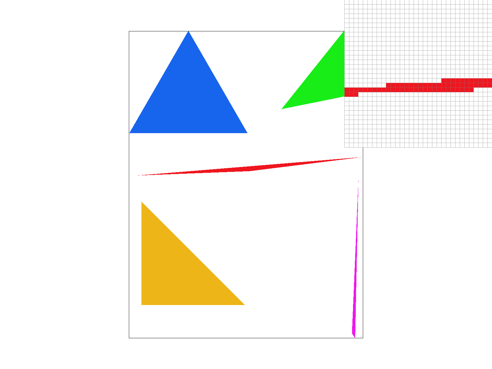
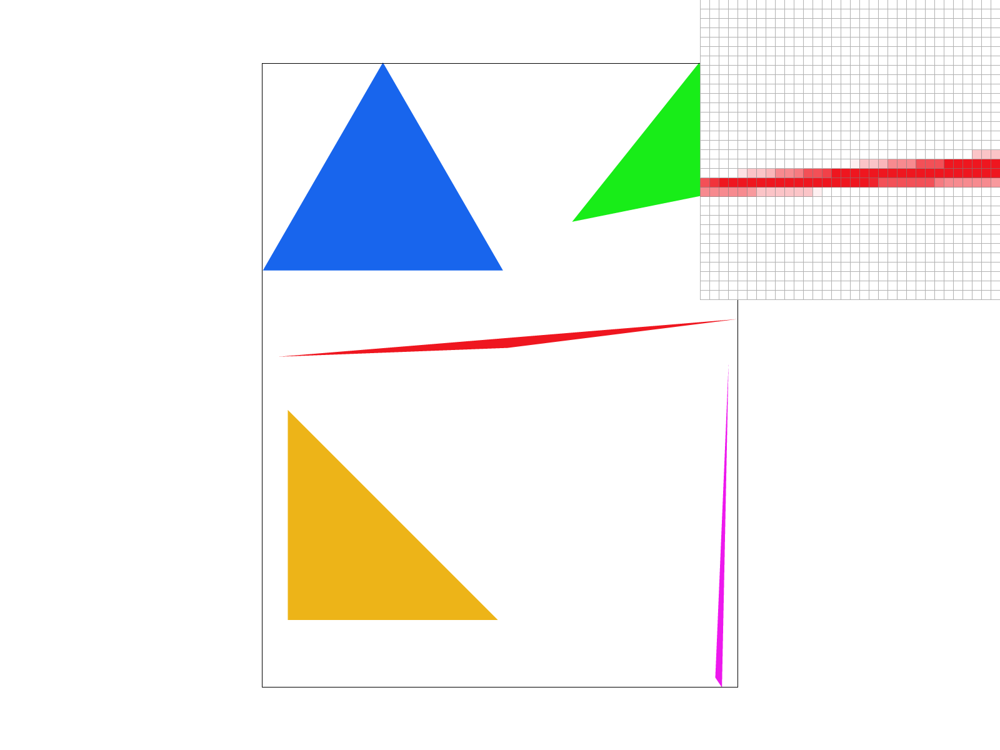
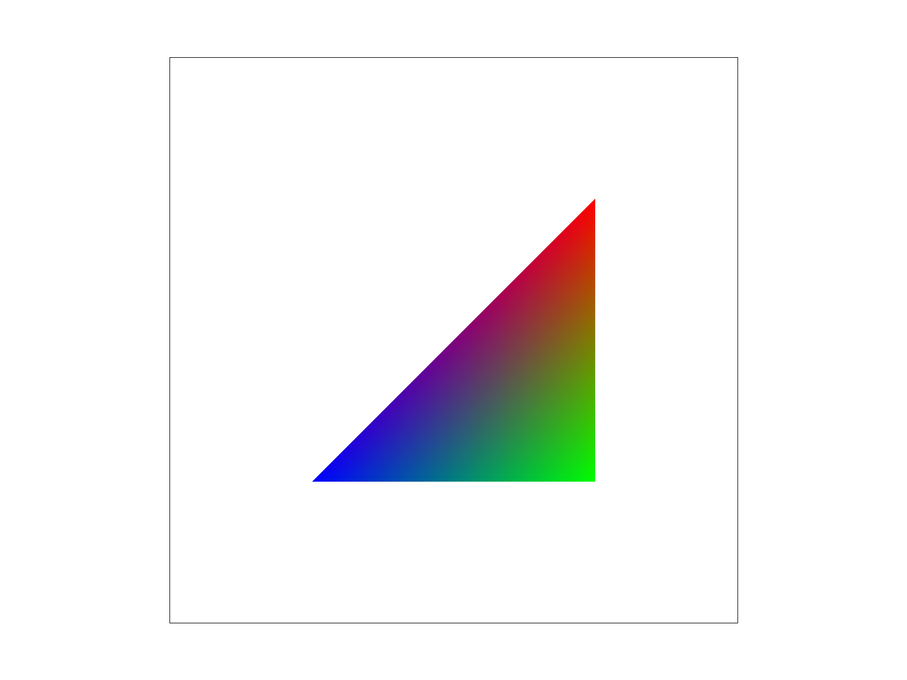
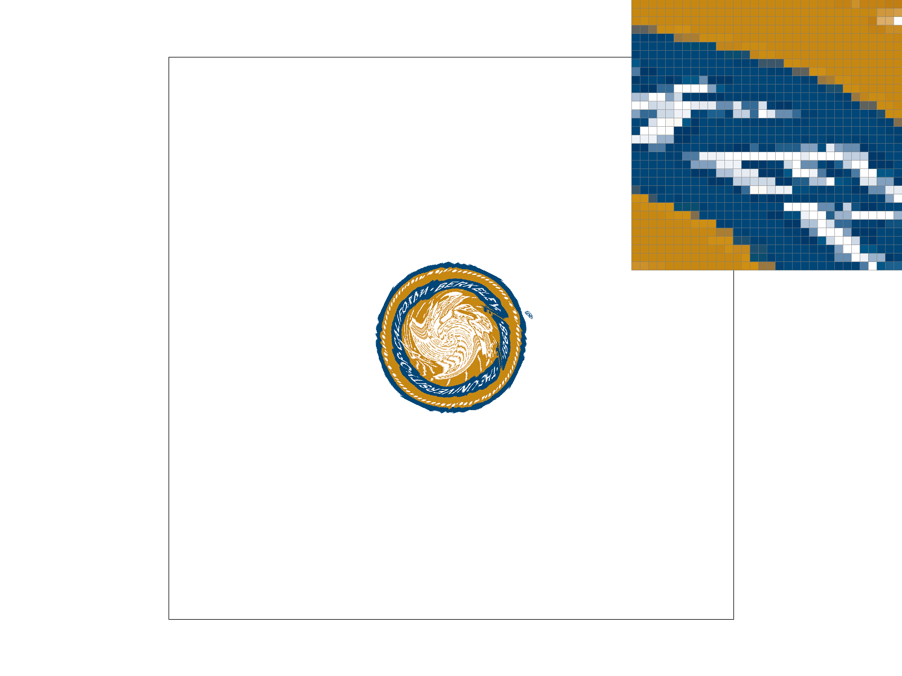
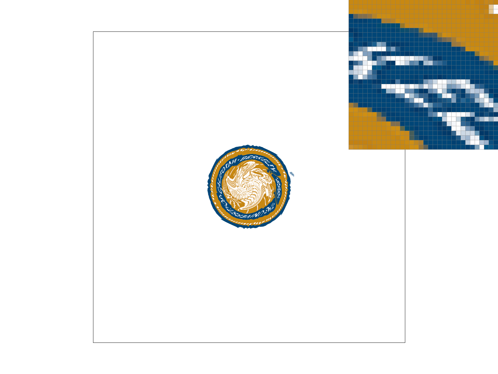
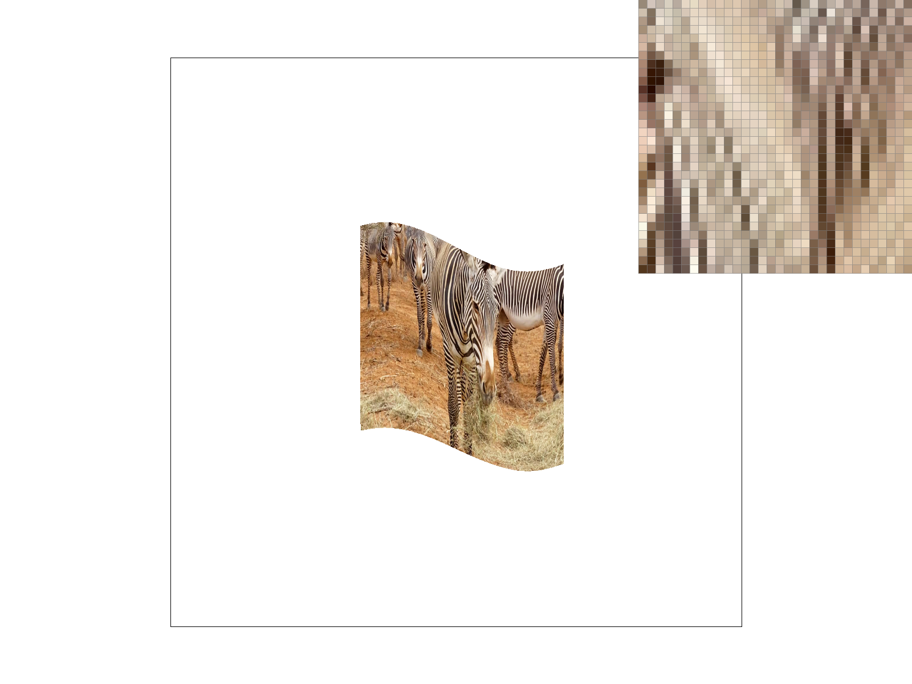

CS184/284A Spring 2025 Homework 1 Write-Up
Name: Catherine Chu
Link to webpage: cal-cs184-student.github.io/hw-webpages-cat-chu-webpages
Link to GitHub repository: github.com/cal-cs184-student/sp25-hw1-catch.git

Overview
This assignment involves building a rasterizer, which processes graphics data stored in vectors and matrices into pixel images. Its tasks explore multiple ways to rasterize images and perform antialiasing, or reduce artifacts, such as supersampling and mipmap level sampling. Overall, this project taught me to visually experiment with and understand the outputs of varying sampling techniques at both a high-level (jaggies and Moire patterns remedied with antialiasing) and pixel-level via a pixel inspector toggle.Task 1: Drawing Single-Color Triangles
To rasterize a triangle, I begin by defining Vector3D variables for each vertex, then ensure that the winding order is clockwise. Next, I determine the triangle's bounding box and iterated through its pixels - each pixel is filled with the triangle's color if it passes the point-in-triangle test, which determines if the point is within the three edges/lines of the triangle.My algorithm is no worse than one that checks each sample within the bounding box of the triangle (the smallest rectangle encompassing the entire triangle) because it first defines the bounding box, then uses nested for loops to iterate through each sample within it once. In the innermost loop, the point-in-triangle test and pixel filling function run on a sample in constant time.
Task 2: Antialiasing by Supersampling
Supersampling is useful because it antialiases triangles by simulating the effect of a 1-pixel box (low pass) filter and attenuating high frequencies. Walking through my supersampling algorithm, it performs task 1's rasterization pipeline, but modifies it by adding nested for loops to iterate throughsqrt(sample_rate) by sqrt(sample_rate) samples for each framebuffer pixel. It
leverages and fills the sample buffer data structure of size (width * height * sample rate) first,
then resolves to the actual framebuffer data structure (width *height) by designating each color
value to the average of the respective samples. The result of this supersampling process is antialiased
triangles, as seen in the following images: jaggies along a skinny triangle corner are removed/blurred as the
sample rate increases and more subsamples are averaged to compute the final color.
|

|

|

|
Task 3: Transforms
After implementing translate, scale and rotate functions, I rendered the following drawing of cubeman. By translating and rotating cubeman's right lower arm, I was trying to get cubeman to wave.Task 4: Barycentric coordinates
Barycentric coordinates \( (α, β, γ) \) define a coordinate system for triangles that, for instance, simplifies the linear interpolation of colors. Taking a look at the following triangle on the left, we can create a color gradient by expressing each point \( (x,y) \) in the triangle in terms of its vertices:\( (x, y) = αA + βB + γC \)
\( α + β + γ = 1 \)
where A, B and C are the RGB colors at its vertices.
|

|

|
Task 5: "Pixel sampling" for texture mapping
Pixel sampling involves assigning pixel colors by mapping from a texture image onto the screen image. To implement it, for each rasterized screen sample \( (x,y) \), I find the corresponding texture coordinates \( (u,v) \). Then, I sample the texel in texture space and assign its color to \( (x,y) \).The nearest pixel sampling method rounds the continuous \( (u,v) \) vector to the nearest integer coordinates and returns the corresponding texel's color, while the bilinear pixel sampling method interpolates the color at that continuous point from its four neighboring texels (two horizontal lerps and one vertical lerp).
In the following images, bilinear sampling clearly defeats nearest sampling:
|

|

|
|
|
|
Nearest sampling returns a more pixelated image than bilinear sampling, which returns a more blended image. When sampling rate increases from 1 to 16, the jaggies are a bit smoother: we see the letter 'K' more connected and 'E' sharper and more clearly defined. Similarly, bilinear sampling at 16 samples per pixel returns a smoother result than nearest sampling at the same sample rate. The difference is most noticeable at edges or areas with high-frequency details since nearest sampling selects the color of a single neighboring texel, while bilinear sampling blends multiple texels to produce a more gradual transition.
Task 6: "Level Sampling" with mipmaps for texture mapping
Level sampling determines the appropriate mipmap level for texture mapping based on how much a region in texture space is being minified when mapped onto the screen. I implement it by first calculating the directional texture coordinate gradients \( (du/dx,dv/dx) \) and \( (du/dy,dv/dy) \). Taking the maximum of their magnitudes L, I compute the mipmap level to use, \( D = \log_2 L \) (texture image downsampled D times). Finally, depending onsp.lsm == {L_ZERO, L_NEAREST, L_LINEAR} and
sp.psm == {P_NEAREST, P_LINEAR}, I apply nearest or bilinear sampling at the 0th mipmap level,
rounded/nearest mipmap level or interpolate the sampling result at neighboring mipmap levels
floor(D) and ceil(D).
The sampling technique of the number of samples per pixel (supersampling) slows down speed and takes up significantly more memory to compute/store the intermediate sample buffer data structure, but has the best antialiasing power. Pixel sampling is much faster and uses minimal memory, as it only processes texels from mipmap level 0, but has poor antialiasing power. Level sampling improves upon pixel sampling. While it involves slightly slower computation to calculate gradients, it still has relatively low storage overhead with Williams' proposed mipmap layout and, importantly, much better antialiasing power - at higher mipmap levels, it is able to leverage low pass filtered, downsampled texture images to perform antialiasing.
In the following images
L_ZERO isn't able to reduce the aliasing/splotches happening at
thinner and closer stripes (high frequencies), but L_NEAREST is able to leverage an appropriate
mipmap level and reduce antialiasing:
L_ZERO and P_NEAREST |

L_ZERO and P_LINEAR |
L_NEAREST and P_NEAREST |
L_NEAREST and P_LINEAR |